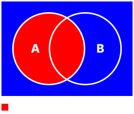
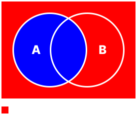
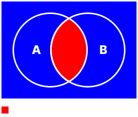
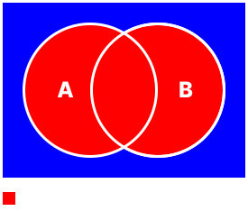
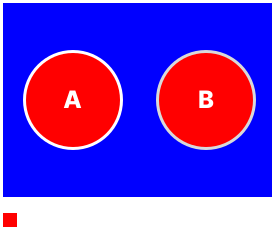

probability
P(a) = probability of A
n(a) = number or amount of numbers in A
types of probability
(decimals/fraction) 0 to 1
(percentage) 0% to 100%
basics
Sets = (cricle) "A" or "B"
Elements = (data) A = {1, 2, 3}
A' = A Complement, everything but A (invert)
∪ = Union, everything
= Usually adding the areas of both elements
∩ = Intersection, everything that is common in both elements
= Usually finding whats common in both elements
two sets
base examples
   Theres a lot more examples but these are the fundementals,
im quite lazy and making these arent easy.
Try making the following by yourself:
$$B$$
$$B'$$
$$A \cup B'$$
$$A' \cup B$$
$$(A \cup B)'$$
$$A' \cap B$$
$$A \cap B'$$
$$(A \cap B)'$$
$$A' \cap B'$$
mutually exclusive events
These are sets that do not have any elements in common.
∅ = null = zero
E.g A ∩ B = ∅
represented visually
example questions
Q1
P(A) = 0.7, P(B) = 0.5, P(A ∩ B) = 0.4
Find P(A ∪ B)
answer
$$P(A \cup B) = P(A) + P(B) - P(A \cap B)$$
$$P(A \cup B) = 0.7 + 0.5 - 0.4$$
$$P(A \cup B) = 0.8$$
Q2
P(A) = 0.4, P(B) = 0.5, P(A ∩ B) = 0.85
I) Find P(A ∩ B)
answer
$$P(A \cap B) = P(A) + P(B) - P(A \cup B)$$
$$P(A \cap B) = 0.4 + 0.8 - 0.85$$
$$P(A \cap B) = 0.35$$
Ii) Find P(A` ∩ B`)
answer
$$P(A' \cap B') = 1 - P(A \cup B)$$
$$P(A' \cap B') = 1 - 0.85$$
$$P(A' \cap B') = 0.15$$